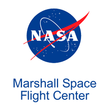
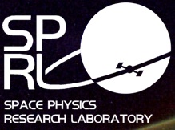
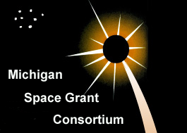

Our Sponsors
Strengthened by 70,000 Engineering alumni and countless friends, a public mission and U-M's across-the-board academic excellence -- 95 graduate programs in the US News top ten -- the college of engineering stretched well beyond renowned technical leadership and superb career preparation. The college is focused on growing a creative community.
AERO is dedicated to providing internationally-recognized leadership in education and research. The University of Michigan started the first collegiate aeronautics program in the United States in 1914. Since then, the Department has graduated more than 6,000 aeronautical and aerospace engineers.

Headquartered in Bethesda, Md., Lockheed Martin is a global security and aerospace company that employs about 112,000 people worldwide and is principally engaged in the research, design, development, manufacture, integration and sustainment of advanced technology systems, products and services.

For more than 50 years, the unique capabilities and expertise at NASA's Marshall Space Flight Center has been used to design and build the engines, vehicles, space systems, instruments and science payloads that make possible unprecedented missions of science and discovery throughout our solar system.

Keithley has approximately 500 products that are used to source, measure, connect, control, or communicate direct current (DC) or pulsed electrical signals. Product offerings include integrated systems along with instruments and personal computer (PC) plug-in boards that can be used as system components or stand-alone solutions.

The Space Physics Research Laboratory was established in the early post-war years at a time of tremendous renewed national optimism and energy. Its original mandat, the in-depth experimental and theoretical study of the natural world using state-of-the-art instruments and models, has remained a constant guiding star over the many intervening years.

Established by Congress in 1988 and implemented by the National Aeronautics and Space Administration in 1989, the National Space Grant College and Fellowship Program (also known as Space Grant) contributes to the nation's science enterprise by funding research, education, and public service projects through a national network of 52 university-based Space Grant consortia.